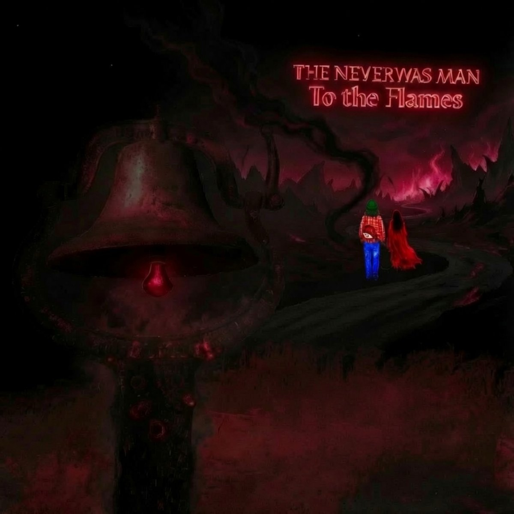
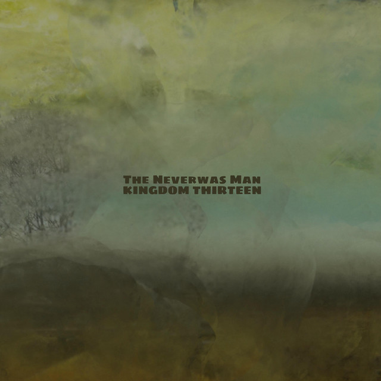
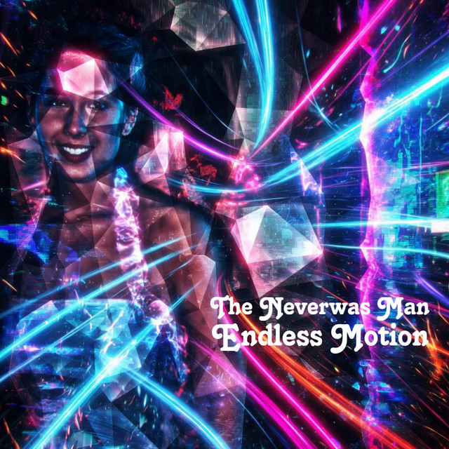
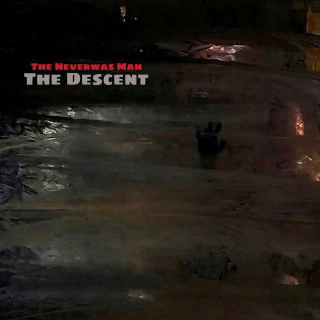
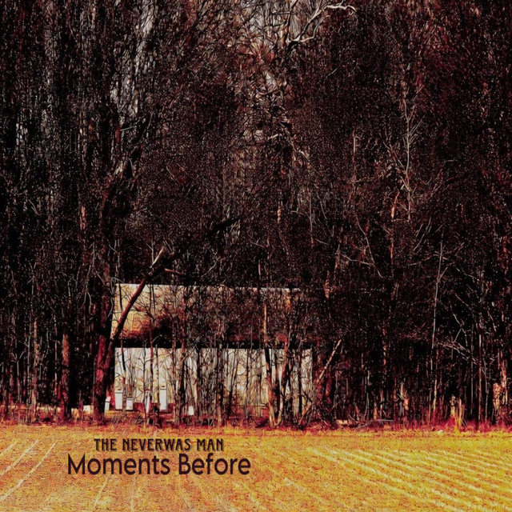
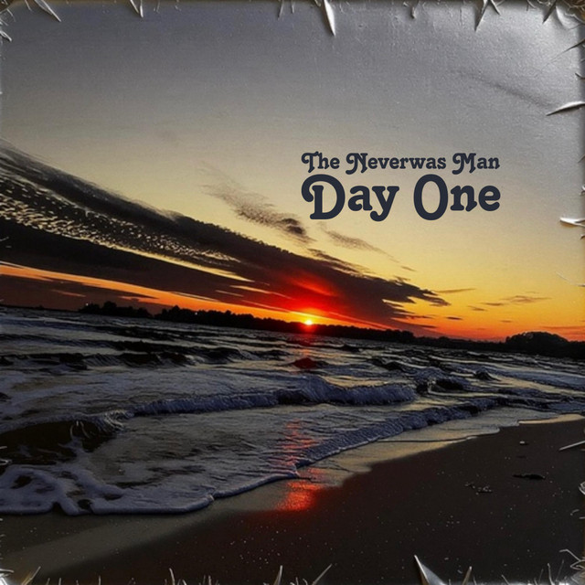
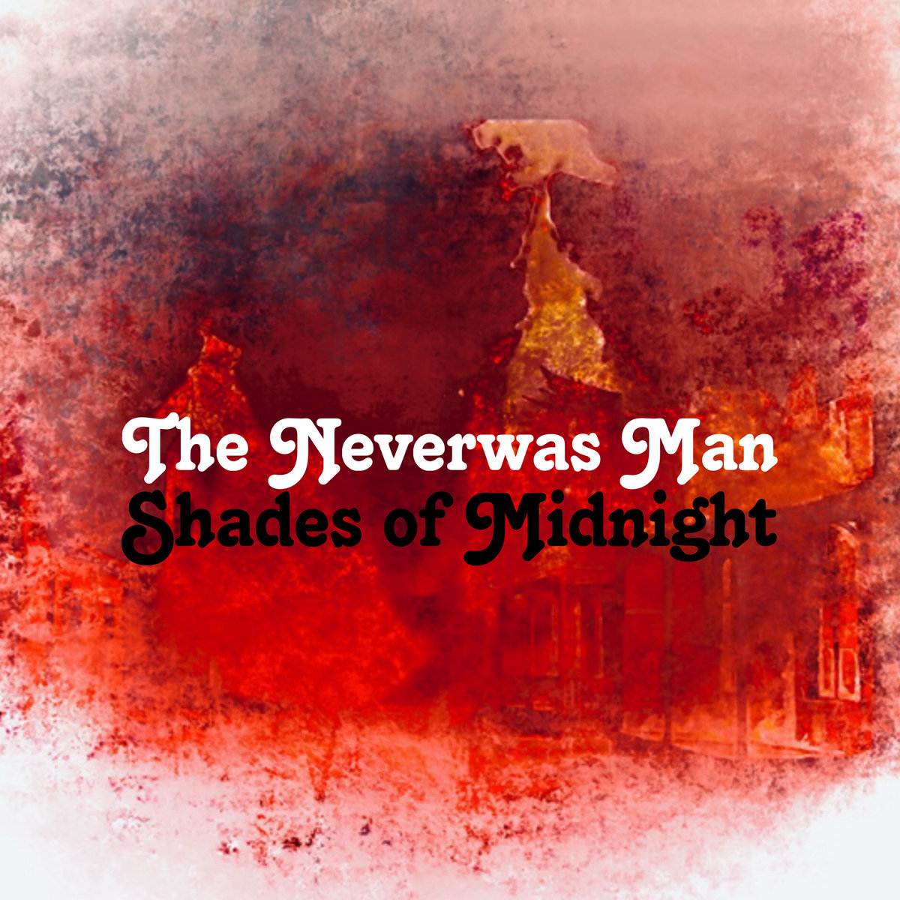
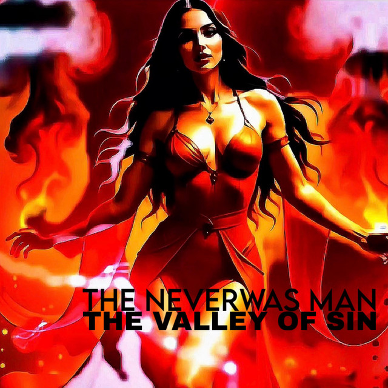
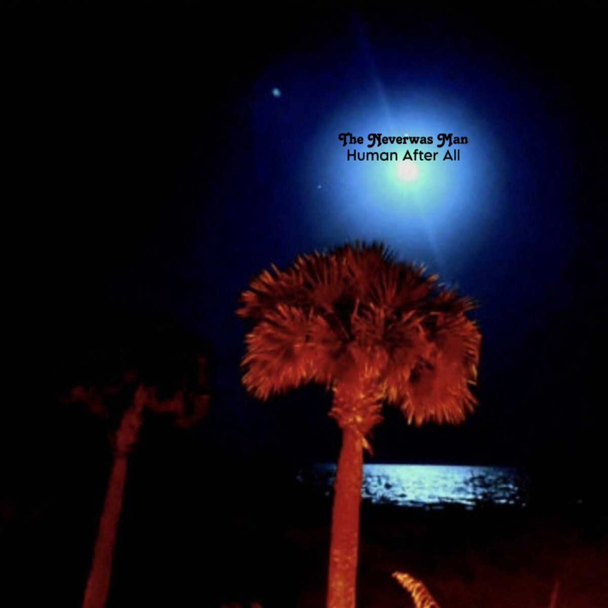

To the Flames
Album — 9 tracks
Released 07/18/2026
- Even When (feat. Josh Jennings)
- Tolerable of Late (feat. Josh Jennings)
- Play Pretend
- Sink
- So My Death Began
- Moving On
- Never Stop
- Through Fire
- To the Flames
“To the Flames is the sound of a man standing at the edge of his own record and asking what grace actually costs. It opens with the wish to stay numb, killing time inside a lie, something inside that keeps forcing a return to trying even when trying has never once changed the ending. That loop — one side to the other, something is happening, but it will end up like it always does — is the whole first half of the album in miniature. The days don’t get better. They just get repeated with slightly different scenery.
Tolerable of Late is the quiet horror of a relationship that stopped being a life and became a weather report. Used to be every day. Now it’s just bearable. The other person alone in her bitterness, and the only real decision left is whether to hate or to love, as if those were the only two doors and both lead out.
Play Pretend is the mask worn so well that both people forget it’s a mask. You look at me and I’m happy just like you want. I look at you and pretend there are no scars. We’ve come too far and it’s too late to give up. That’s not romance. That’s a hostage situation with good lighting.
Sink. So My Death Began. Moving On. Never Stop. Through Fire.
And then the title track, four lines that carry the weight of everything before them. If everything I’ve ever said and done wasn’t covered by your blood, I know what would come for me, standing before the judgement seat. To the flames with his soul. Not a threat aimed outward. A verdict aimed inward. The fire isn’t coming for someone else. It’s coming for the man who wrote these songs, and he’s the one naming it.
What the album leaves unresolved is whether that covering is real or whether it’s the last story a person tells himself to keep standing. Whether the flames are judgment or purification. Whether the soul that goes into them comes back different or doesn’t come back at all. The songs don’t answer. They just keep burning.”
— Anonymous

Kingdom 13
EP — 6 tracks
Released 05/04/2026
- Nothing Ever (feat. Josh Jennings)
- Breathe Easy
- Better Here
- Kissed
- The Valley of Sin
- You Anymore
“Kingdom 13 doesn’t announce itself so much as it keeps returning to the room you already live in. The days that end only to begin again. The search for a stretch of time that might finally be spent on something other than surviving the hour.
Nothing Ever is the wheel that refuses to leave its groove. The confession that the space at the end of the day is still the same space. That recognition is both prison and the only honest ground left.
From there the EP moves into the necessary violence of separation. The bitter flames that answer the scars your words left. The cold soul whose color fades until the only mercy is distance so breath can return. Better Here sits in the corner of the mind where the other person is finally nowhere. And the lullaby that says goodnight is not cruelty. It’s the first clean air after years of shared weather.
Then the valley opens. The pleasures that lift the mind into stars only to let those stars fall and scar the heart. The reminder that comfort was never meant to be hunted in the places that keep us circling. That this world was never the home.
And at the far edge, the simplest and hardest line. I don’t care about you anymore. Not triumph. Just the exhaustion of carrying a broken heart that someone else left on the floor. The misery that no longer has to be the only thing between you and the next breath.”
— Anonymous

Endless Motion
Album — 8 tracks
Released 05/03/2026
- As Though a Tower
- Her Way
- Ride
- She Knows
- Smirk
- The Hunger Beneath
- Watch You Be
- You Got Me

The Descent
Single — 3 tracks
Released 05/02/2026
- The Descent
- The Mirror
- The Scarlet Thread

Moments Before
Album — 11 tracks
Released 04/21/2026
- Brighter Than the Sun
- Can't Remember
- Death Has Come
- In My Dreams Tonight
- My Hope
- No One There
- Tomorrow
- True Blue
- What I Use to Have
- What Was
- You Never Know

Day One
Single — 3 tracks
Released 04/21/2026
- Day One
- Project A
- Well With What You Have

Shades of Midnight
Album — 7 tracks
Released 04/20/2026
- Act One, Scene One
- Midnight
- Rock
- Roll
- Somewhere Within
- The Queens Head
- Tumble Weed

The Valley of Sin
Single
Released 02/24/2026
- The Valley of Sin

Fruitless Waste
Instrumental album — 13 tracks
Released 03/10/2025
- The Queen of My Heart
- Suspended
- Slow Stride
- Outside Your Room
- Last Call
- I'd Die Without You
- Hickory
- Green
- Fuck Around and Find Out
- Flight of the Hummingbirds
- Endless
- Bloom
- Above and Beyond

Vibranium
Instrumental EP — 3 tracks
Released 02/22/2022
- Tell Me You'll Be Good To Me
- Insert
- Vibranium

Farther From Where We Started
Single
Released 10/24/2021
- Farther From Where We Started

Possess My Clay
Instrumental EP — 3 tracks
Released 09/24/2021
- Hidden in You
- The Center of You
- Coming Together

State of the Human
EP — 3 tracks
Released 03/14/2021
- Love Song
- Under the Ground
- Being Without You

Human After All
Album — 12 tracks
Released 02/15/2021
- Human After All (feat. Josh Jennings)
- Really Know Me
- Just Me
- Back To Me
- I'd Prefer (feat. Josh Jennings)
- Spend My Dime
- Who I've Become
- What Was Mine
- Where I Belong
- All I Want
- Goodbye
- Read My Letter (feat. Josh Jennings)
“Human After All opens with the fall. Your knight in shining armor has fallen down. Turns out he was human after all. The love she once had for him has died, and the verdict comes fast: lock him up in his mistakes, throw the key away, look for someone else to save the day. Really Know Me answers with a shrug that isn’t one. You don’t really know me. That’s okay.
Just Me asks for exile. Send me away to a land where there’s nothing. No one to disappoint, no one to tell him his heart’s not where it should be. Back To Me is the relapse told like a parable. When you swept my heart clean and made the demons flee, they couldn’t find no rest, so they ran right back to me. The condition of the soul is worse than it was so many years ago.
I’d Prefer is the closest the album comes to a love song, and even it arrives armed. A bullet to the brain before living without your love. Spend My Dime is the wall that goes up after. I’ve been told you can’t trust no one. I’ll spend my dime any way I choose, while you spend your life tearing down mine.
Then the mirror. I don’t like who I’ve become. I’m ashamed of what I’ve done. In the darkness he finds a grave he dug himself to die in, no good and broken, when all he ever needed was somebody to love. What Was Mine wants to give it all away, because nothing satisfies and anything he’s ever tried falls apart.
Where I Belong asks to be buried in an unmarked grave with a life of guilt and shame. Too sad to try anymore, too tired to fight. All I Want gets quieter and darker. A halo made of rope. Only one step to go. Goodbye sinks to the bottom of the ocean. Goodbye, my love, I’ve grown cold.
And Read My Letter is what gets left on the table. Read my letter, how it never got any better. I finally made it out of this world. What the album leaves unresolved is whether the knight was ever supposed to be a savior, or whether his only crime was turning out to be human after all. The letter gets read. The songs are what’s left.”
— Anonymous

Ghost Town
Album — 10 tracks
Released 01/19/2021
- Below the Unknown
- Benzo Coma
- Epitaph
- Ghost Town
- Medicate
- Broken, Holding On
- Tell-Tale Heart
- Full of Lead
- Final Bow
- Take Me Out
“Ghost Town is what a life sounds like after everyone has stopped coming around. It opens below the unknown, lying down in the water and floating under the diamond sea while the world keeps chasing paper and whatever’s been sold as dreams. Not escape exactly. Just the decision to stop running in the same direction as everyone else.
Then the numbing starts. Benzo Coma is a bet placed on getting through the day, a mind sedated until the thoughts fade, isolation used as a wall to keep people far away. The stones keep coming and he keeps collecting them. Epitaph writes the headstone early. Here lies everything you hated. Let the blame and the shame lie with me in the cold ground, and let everyone else go on happily sedated.
The title track is the empty street at the center of it all. Where did everybody go? Friends who are never there when he’s down, a desert in the soul, broken dreams and dusty bones as the only inheritance. Medicate answers the silence the only way it knows how. Chemicals that burn the soul but kill the pain. A hollowness that follows every day. I’ll medicate, I’ll drift away. Not a confession so much as a schedule.
Broken, Holding On is the one place the album lifts its head. We are all broken and holding on. Throw our mistakes in the fire, purify the present, and the future might be brighter without the regret that clouds our eyes. It’s not hope. It’s the outline of where hope would go.
Then the fire turns inward. Tell-Tale Heart beats under the bed, and the poison from her lips takes him by surprise. Full of Lead runs out of ways to pretend to be happy, lungs heavy, heart numb, a wasted life spent wasting time. Final Bow wakes up just in time to tie itself in chains and fake a smile over the pain. I can’t escape, so I’ll burn out.
And Take Me Out is the last request. Put my body in the grave and let my spirit fly. Long for the past and the present dies. What the album leaves unresolved is whether setting all that weight down in the cold ground is surrender or the first honest rest he’s had. The town stays empty. The songs keep the lights on anyway.”
— Anonymous